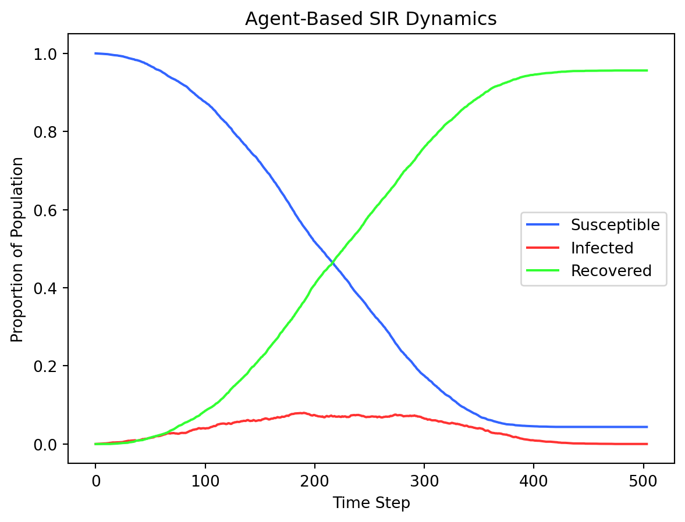

def init_grid(dimx, dimy):
# PURPOSE: Initialize an empty grid to run simulation on.
# INPUTS:
# dimx: length of x dimension
# dimy: length of y dimension
# OUTPUTS: An empty array of dimx x dimy
# SIDE EFFECTS: None
# import required libraries
import numpy as np
return np.zeros((dimy, dimx), dtype=int)Homework 11
Structured Programming
Cleanly Re-Coding a CA SIR Model using Functional Programming
P. Alexander Burnham
20 March 2026
Objective:
Here we will use structured programming to code up Cellular Automata Model for the SIR Model using a driver script and helper functions in a properly structured repository. This kind of structure is necessary as projects increase in complexity and code bases correspondingly increase in size.
The Assignment:
At the end of this assignemnt, you will have created a new properly structured repository and using the code and information below, seperated the functions into seperate files stored in a functions folder, which can be sourced from a driver script in a .qmd python code chunk.
Your output of this assignment to be posted on your github page will be a single .html file.
1: Set up a new github repository named CA_SIR_6100.
Format the repository to include your driver .qmd file, and a folder named functions. A diagram for a well structured repo can be found below.
NOTE: For this homework, many of the items in this example repository are not neccessary and are listed for future reference. In a large project, these are the kinds of folders and directories that will often be needed. For this code to run, the driver .qmd file and the functions folder (containing our function.py files) will be all that are required.
- Root Folder (Name of Repository)
- driver.py
- readme.txt
- .gitignore
- license.txt
- data (folder):
- data1.csv
- data2.tif
- data3.txt
- functions (folder):
- function_1.py
- function_2.py
- function_3.py
- figures (folder):
- figure_1.pdf
- figure_2.pdf
- documents (folder):
- manuscript_draft_1.md
- grant_proposal.docx
2: Create your function.py files.
Under the section below entitled “Functions for SIR Model”, are four code chunks. Create a new python file for each. File names are suggested above each code chunk. Put all four python files into your functions folder.
3: Create your rough .qmd driver script.
Create a .qmd file in the root of your repository entitled ca_sir_driver. Change the title in your YAML to “Homework 11: Structured Programming and CA Models”. 1: Create a section where you describe your repository structure and provide a link to your new github repository. 2: Create a second section that includes a python code chunk. Paste the driver code inside this chunk. The driver code is near the bottom of this document under the header, “Driver Script”. As a reminder, a python code chunk begins with: ```{python} and ends with ```
4: Source your four helper functions located in the functions folder
Source your functions from the driver directly after our python libraries are sourced. Sourcing a function within a folder named functions takes the form found below…
# NOTE: file extensions are not required in the code below
from functions.filename import function_nameOnce all four functions are sourced in this manner, move onto step 5.
5: Run your code by rendering the .qmd file as an .html file.
Render your .html file. This will bring up your interactive SIR grid. Initialize your infected cells by clicking on them and hit the spacebar to watch the simulation. The space bar will also pause the simulation. While paused, the S key will step through the simulation frame by frame. Changing \(\beta\) and \(\gamma\) in the driver script will affect the speed and spread of the infection. Once the simulation has reached a steady state, the ESC key will end the simulation and finish the rendering of the .html file. A figure plotting the curves of \(S\), \(I\) and \(R\) should be included as an output in your rendered file automatically. Your pygame may still be open with a spinning wheel (inactive). This will restart if you rerun the simulation and close when you quit Positron.
How This SIR Model Works:
Agent-Based SIR Model Using Cellular Automata
This simulation implements an agent-based SIR (Susceptible-Infected-Recovered) model on a 2D grid, similar to a cellular automaton (CA). Each grid cell represents an individual in one of three states:
- Susceptible (S): Healthy, can become infected.
- Infected (I): Currently infectious, can transmit disease to neighbors.
- Recovered (R): Immune and no longer infectious.
Neighborhood: Each cell interacts with its 8 surrounding neighbors (Moore neighborhood). The number of infected neighbors determines the probability of a susceptible cell becoming infected.
Rules and Probabilities:
- Infection: A susceptible cell becomes infected with probability
1 - (1 - β)^n, whereβis the infection probability per neighbor, andnis the number of infected neighbors. - Recovery: An infected cell recovers with probability
γper time step.
User Interaction:
- Left click → infect a susceptible cell.
- Right click → make a cell recovered.
- Spacebar → toggle automatic simulation.
- S key → single-step the simulation.
- C key → reset the grid.
Over time, the simulation tracks the proportion of S, I, and R individuals and plots their dynamics, illustrating epidemic spread patterns.
Functions for SIR Model:
Function 1: init_grid()
This function is stored in a file called init.py.
Function 2: draw()
This function is stored in a file called draw.py.
def draw(surface, grid, cellsize, S, I, R, col_S, col_I, col_R):
# PURPOSE: Draw interactive pygame lattice
# INPUTS: Inputs to pass to other helper functions:
# surface: Surface that pygame draws the simulation on.
# grid: Array that simulation is being conducted on
# cellsize: size of cells
# S, I, R: numeric states for each class (S = 0, I = 1, R = 2)
# col_S, col_I, col_R: hex codes for the colors of the states
# OUTPUTS: None
# SIDE EFFECTS: Interactive SIR grid with keyboard commands.
# Mouse: activate infected cells on grid
# Spacebar: play and pause simmulation (default = pause)
# S-Key: progress through simulation step-by-step while paused
# Esc: stop simulation and return SIR curves as a figure
# required libraries
import pygame
import numpy as np
for state in [S, I, R]:
rows, cols = np.where(grid == state)
if state == S:
color = col_S
elif state == I:
color = col_I
else:
color = col_R
for r, c in zip(rows, cols):
pygame.draw.rect(
surface,
color,
(c * cellsize, r * cellsize, cellsize - 1, cellsize - 1),
)Function 3: update_sir()
This function is stored in a file called update.py.
def update_sir(grid, beta, gamma, S, I, R):
# PURPOSE: Update the grid each time step based on rules
# INPUTS:
# grid: previous grid
# beta: transmission rate
# gamma: recovery rate
# S, I, R: numeric states for each class (S = 0, I = 1, R = 2)
# OUTPUTS: New updated grid as a np array.
# SIDE EFFECTS: None
import numpy as np # required libary
infected_neighbors = (
np.roll(np.roll(grid == I, 1, 0), 1, 1) +
np.roll(np.roll(grid == I, 1, 0), 0, 1) +
np.roll(np.roll(grid == I, 1, 0), -1, 1) +
np.roll(np.roll(grid == I, 0, 0), 1, 1) +
np.roll(np.roll(grid == I, 0, 0), -1, 1) +
np.roll(np.roll(grid == I, -1, 0), 1, 1) +
np.roll(np.roll(grid == I, -1, 0), 0, 1) +
np.roll(np.roll(grid == I, -1, 0), -1, 1)
)
new_grid = grid.copy()
infect_prob = 1 - (1 - beta) ** infected_neighbors
rand = np.random.rand(*grid.shape)
new_grid[(grid == S) & (rand < infect_prob)] = I
recover = (grid == I) & (np.random.rand(*grid.shape) < gamma)
new_grid[recover] = R
return new_gridFunction 4: mouse_to_cell()
This function is stored in a file called mouse.py.
def mouse_to_cell(pos, cellsize):
# PURPOSE: Use mouse to indicate cell position in grid
# INPUTS:
# pos: position of mouse
# cellsize: size of cell on pydata interactive grid
# OUTPUTS: Returns the cell that was activated by the mouse
# SIDE EFFECTS: None
x, y = pos
return y // cellsize, x // cellsizeDriver Script:
# Run an agent-based SIR model
# P. Alexander Burnham
# 25 March, 2026
# import libraries
import pygame
import numpy as np
import matplotlib.pyplot as plt
# import functions here....
# States
S = 0
I = 1
R = 2
# Colors
col_S = (50, 100, 255)
col_I = (255, 50, 50)
col_R = (50, 255, 50)
col_grid = (30, 30, 60)
# Params
beta = 0.05 # infection probability
gamma = 0.05 # recovery probability
########################################################################################################################
# Begin Program Body
########################################################################################################################
########################################################################################################################
# BEGIN FUNCTION
def main(dimx, dimy, cellsize, S = S, I = I, R = R, beta = beta, gamma = gamma, col_S = col_S, col_I = col_I, col_R = col_R, col_grid = col_grid):
# PURPOSE: Run all helper functions, control keyboard commands and plot SIR curves.
# INPUTS: Inputs to pass to other helper functions:
# dimx: number of cells in x dimension
# dimy: number of cells in y dimension
# cellsize: size of cells
# S, I, R: numeric states for each class (S = 0, I = 1, R = 2)
# col_S, col_I, col_R, col_grid: hex codes for the colors of the states and the empty grid
# OUTPUTS: None
# SIDE EFFECTS: Interactive SIR grid with keyboard commands and SIR plot at simulation end.
# Mouse: activate infected cells on grid
# Spacebar: play and pause simmulation (default = pause)
# S-Key: progress through simulation step-by-step while paused
# Esc: stop simulation and return SIR curves as a figure
pygame.init()
surface = pygame.display.set_mode((dimx * cellsize, dimy * cellsize))
pygame.display.set_caption("Agent-Based SIR Model")
clock = pygame.time.Clock()
grid = init_grid(dimx, dimy)
running = False
step = False
done = False
# --- epidemic history ---
S_hist = []
I_hist = []
R_hist = []
while not done:
for event in pygame.event.get():
if event.type == pygame.QUIT:
done = True
if event.type == pygame.KEYDOWN:
if event.key == pygame.K_ESCAPE:
done = True
if event.key == pygame.K_SPACE:
running = not running
if event.key == pygame.K_s:
step = True
if event.key == pygame.K_c:
grid = init_grid(dimx, dimy)
if event.type == pygame.MOUSEBUTTONDOWN:
row, col = mouse_to_cell(event.pos, cellsize)
if event.button == 1: # left click → infect
if grid[row, col] == S:
grid[row, col] = I
elif event.button == 3: # right click → recover
grid[row, col] = R
surface.fill(col_grid)
if running or step:
grid = update_sir(grid, beta, gamma, S = S, I = I, R = R)
step = False
total = grid.size
S_hist.append(np.sum(grid == S) / total)
I_hist.append(np.sum(grid == I) / total)
R_hist.append(np.sum(grid == R) / total)
draw(surface, grid, cellsize, S=S, I=I, R=R, col_S=col_S, col_I=col_I, col_R=col_R)
pygame.display.update()
clock.tick(20)
pygame.quit()
pygame.display.quit()
# --- Plot epidemic curves ---
t = range(len(S_hist))
plt.figure()
plt.plot(t, S_hist, color=np.array(col_S)/255, label="Susceptible")
plt.plot(t, I_hist, color=np.array(col_I)/255, label="Infected")
plt.plot(t, R_hist, color=np.array(col_R)/255, label="Recovered")
plt.xlabel("Time Step")
plt.ylabel("Proportion of Population")
plt.title("Agent-Based SIR Dynamics")
plt.legend()
plt.show()
############################################################################################################
# FUNCTION END
# run main function here...
if __name__ == "__main__":
main(100, 70, 8)